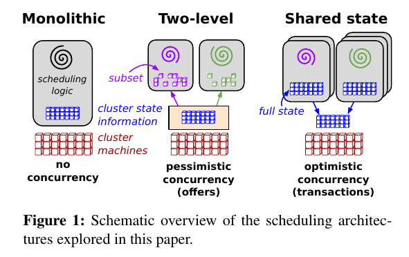

omega
Table of Contents
1 omega
- link: http://research.google.com/pubs/pub41684.html
- title: Omega: flexible, scalable schedulers for large compute clusters
- date: 2013
- http://dongxicheng.org/mapreduce-nextgen/google-omega/
Omega论文描述了Google经历的三代资源管理系统，并探讨了各自的优缺点，这三代系统分别如下：

- 中央式调度器（Monolithic scheduler）. 中央式调度器的特点是，资源的调度和作业的管理功能全部放到一个进程中完成，开源界典型的代表是Hadoop JobTracker的实现。这种设计方式的缺点很明显，扩展性差：首先，集群规模受限，其次，新的调度策略难以融入现有代码中，比如之前仅支持MapReduce作业，现在要支持流式作业，而将流式作业的调度策略嵌入到中央式调度器中是一项很难的工作。
- 双层调度器（Two-level scheduler）. 为了解决中央式调度器的不足，双层调度器是一种很容易想到的解决之道（实际上是分而治之策略或者是策略下放机制）。双层调度器仍保留一个经简化的中央式调度器，但调度策略下放到各个应用程序调度器完成。这种调度器的典型代表是 mesos 和 YARN . 双层调度器的缺点是：
- 各个框架无法知道整个集群的实时资源使用情况。很多框架不需要知道整个集群的实时资源使用情况就可以运行的很顺畅，但是对于其他一些应用，为之提供实时资源使用情况可以为之提供潜在的优化空间，比如，当集群非常繁忙时，一个服务失败了，是选择换一个节点重新运行它呢，还是继续在这个节点上运行？通常而言，换一个节点可能会更有利，但是，如果此时集群非常繁忙，所有节点只剩下小于5GB的内存，而这个服务需要10GB内存，那么换一个节点可能意味着长时间等待资源释放，而这个等待时间是无法确定的。 # note(dirlt): 但是这样同样会复杂调度器逻辑.
- 采用悲观锁，并发粒度小。在数据库领域，悲观锁与乐观锁争论一直不休，悲观锁通常采用锁机制控制并发，这会大大降低性能，而乐观锁则采用多版本并发控制(MVCC ,Multi-Version Concurrency Control)，典型代表是MySQL innoDB，这种机制通过多版本方式控制并发，可大大提升性能。在Mesos中，在任意一个时刻，Mesos资源调度器只会将所有资源推送给任意一个框架，等到该框架返回资源使用情况后，才能够将资源推动给其他框架，因此，Mesos资源调度器中实际上有一个全局锁，这大大限制了系统并发性。
- 共享状态调度器（Shared State Scheduler）. 为了克服双层调度器的以上两个缺点，Google开发了下一代资源管理系统Omega，Omega是一种基于共享状态的调度器，该调度器将双层调度器中的集中式资源调度模块简化成了一些持久化的共享数据（状态）和针对这些数据的验证代码，而这里的“共享数据”实际上就是整个集群的实时资源使用信息。一旦引入共享数据后，共享数据的并发访问方式就成为该系统设计的核心，而Omega则采用了传统数据库中基于多版本的并发访问控制方式（也称为“乐观锁”, MVCC, Multi-Version Concurrency Control），这大大提升了Omega的并发性。